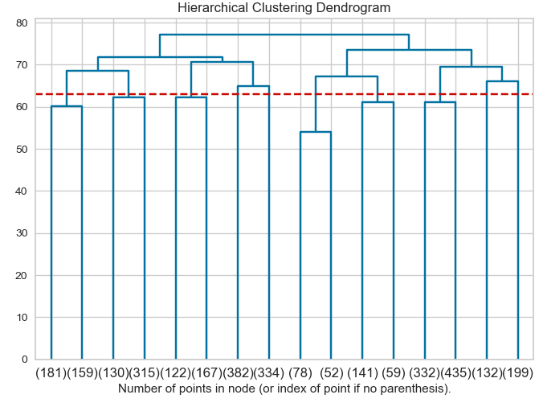

DBSCAN - Density-Based Spatial Clustering of Applications with Noise. Finds core samples of high density and expand clusters from them. Good for data which contains clusters of similar density. [More details]
from sklearn.cluster import DBSCAN
X=Feature_set.iloc[:,0:-1]
y_true=Feature_set.iloc[:,-1]
model = DBSCAN(eps=0.3, min_samples=10)
y_pred=model.fit_predict(X)
print(
"purity_score: %0.3f"
% purity_score(y_true, y_pred)
)Performance of the DBSCAN model:
purity_score: 0.519import numpy as np
from matplotlib import pyplot as plt
from scipy.cluster.hierarchy import dendrogram
from sklearn.cluster import AgglomerativeClustering
def plot_dendrogram(model, **kwargs):
# Create linkage matrix and then plot the dendrogram
# create the counts of samples under each node
counts = np.zeros(model.children_.shape[0])
n_samples = len(model.labels_)
for i, merge in enumerate(model.children_):
current_count = 0
for child_idx in merge:
if child_idx < n_samples:
current_count += 1 # leaf node
else:
current_count += counts[child_idx - n_samples]
counts[i] = current_count
linkage_matrix = np.column_stack(
[model.children_, model.distances_, counts]
).astype(float)
# Plot the corresponding dendrogram
dendrogram(linkage_matrix, **kwargs)
X=Feature_set.iloc[:,0:-1]
y_true=Feature_set.iloc[:,-1]
# setting distance_threshold=0 ensures we compute the full tree.
model = AgglomerativeClustering(distance_threshold=0,linkage="complete", affinity="cosine",n_clusters=None)
model = model.fit(X)
plt.title("Hierarchical Clustering Dendrogram")
# plot the top three levels of the dendrogram
plot_dendrogram(model, truncate_mode="level", p=3)
plt.xlabel("Number of points in node (or index of point if no parenthesis).")
plt.show()
model = AgglomerativeClustering( linkage="complete", affinity="cosine",n_clusters=2)
y_pred = model.fit_predict(X)
print(
"purity_score: %0.3f"
% purity_score(y_true, y_pred)
)
Purity of the Hierarchical clustering
purity_score: 0.519